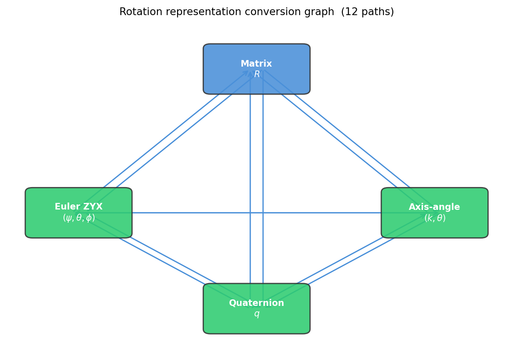

import matplotlib.pyplot as plt
import matplotlib.patches as mpatches
fig, ax = plt.subplots(figsize=(7, 5))
ax.set_xlim(-0.2, 1.2)
ax.set_ylim(-0.2, 1.2)
ax.axis('off')
nodes = {
'Matrix\n$R$': (0.5, 1.0),
'Euler ZYX\n$(\psi,\\theta,\\phi)$': (0.0, 0.4),
'Axis-angle\n$(k,\\theta)$': (1.0, 0.4),
'Quaternion\n$q$': (0.5, 0.0),
}
colors = {
'Matrix\n$R$': '#4a90d9',
'Euler ZYX\n$(\psi,\\theta,\\phi)$': '#2ecc71',
'Axis-angle\n$(k,\\theta)$': '#2ecc71',
'Quaternion\n$q$': '#2ecc71',
}
for name, (x, y) in nodes.items():
box = mpatches.FancyBboxPatch(
(x - 0.13, y - 0.085), 0.26, 0.17,
boxstyle='round,pad=0.02',
facecolor=colors[name], edgecolor='#333333',
linewidth=1.2, alpha=0.88, zorder=3,
)
ax.add_patch(box)
ax.text(x, y, name, ha='center', va='center',
fontsize=8.5, fontweight='bold', color='white', zorder=4)
direct = [
('Matrix\n$R$', 'Euler ZYX\n$(\psi,\\theta,\\phi)$'),
('Euler ZYX\n$(\psi,\\theta,\\phi)$', 'Matrix\n$R$'),
('Matrix\n$R$', 'Axis-angle\n$(k,\\theta)$'),
('Axis-angle\n$(k,\\theta)$', 'Matrix\n$R$'),
('Matrix\n$R$', 'Quaternion\n$q$'),
('Quaternion\n$q$', 'Matrix\n$R$'),
('Axis-angle\n$(k,\\theta)$', 'Quaternion\n$q$'),
('Quaternion\n$q$', 'Axis-angle\n$(k,\\theta)$'),
('Euler ZYX\n$(\psi,\\theta,\\phi)$', 'Quaternion\n$q$'),
('Quaternion\n$q$', 'Euler ZYX\n$(\psi,\\theta,\\phi)$'),
('Euler ZYX\n$(\psi,\\theta,\\phi)$', 'Axis-angle\n$(k,\\theta)$'),
('Axis-angle\n$(k,\\theta)$', 'Euler ZYX\n$(\psi,\\theta,\\phi)$'),
]
for i, (src, dst) in enumerate(direct):
x0, y0 = nodes[src]
x1, y1 = nodes[dst]
off = 0.018 * (1 if i % 2 == 0 else -1)
ax.annotate('', xy=(x1 + off, y1), xytext=(x0 + off, y0),
arrowprops=dict(arrowstyle='->', color='#4a90d9', lw=1.2),
zorder=2)
ax.set_title('Rotation representation conversion graph (12 paths)', fontsize=10)
plt.tight_layout()
plt.show()